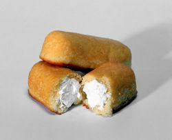
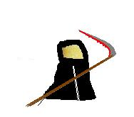

Twinkie
 De: La Frikipedia, la enciclopedia extremadamente seria.
De: La Frikipedia, la enciclopedia extremadamente seria.
| De la serie alimentos y otras vainas:
|
|
|
| Nombre:
|
Twinkies
|
| Tipo de Comida:
|
Panqueque
|
| ¿Como se Come?
|
Por salud... no
|
| ¿De donde Proviene?
|
mexico
|
| Ingrediente Basico:
|
Popo,lefa leche, vainilla y sangre de wombat.
|
| Forma de Presentación
|
En tu mano
|
| Sabor:
|
No tiene
|
 Seres invertebrados con vainilla, chocolate y fresa por sangre conocidos por el hecho de que son indestructibles
 El twinkie con su guadaña
En la antigüedad los griegos los llamaban wuchusmanishausens, pero era muy difícil de pronunciar y les pusieron twankes (latín) que en español seria "panquecito suave, indestructible y relleno con forma de caca".
Origen
Dicen que en el Badabín Badabán los pedazos de materia se agruparon y formaron a los planetas, pero había ciertos pedazos bastante raros, que no se podían unir por su indestructibilidad, así que vino Chick Nurros (ancestro de Chuck Norris) y los forjó, creando panquecitos esponjosos, gordos e indestructibles.
Otra anécdota de los twinkies es que los 300 espartanos no fueron 300, fueron 367. Esos otros sesenta y siete fueron valientes twinkies que lucharon por la libertad contra los persas que, debido a su indestructibilidad, no murieron pero fueron capturados por las fuerzas tejanas procedentes de Nueva York, Francia.
El paradero de esos 67 valientes aun se desconoce.
Debilidades
- Los gases mortales y los jugos gástricos mega corrosivos del estómago de Vin Diesel.
- Una buena y sencilla bomba atomica jamas falla.
- Un golpe efectivo exactamente en el punto medio de su esponjoso cuerpo lo partirá en dos, fácilmente efectuado por el más pendejo wey que quiera comérselo para después descubrir que sabe a mierda.
- Las fuerzas tejanas de Nueva York, Francia.
- Y no intentes poner a un ejercito a detruirlo, o te lo comes o te lo comes.
Curiosidades
- Los twinkies a pesar de toda su historia y merito verdaderamente ni saben bien.
- Carlos XIV era un twinkie disfrazado.
- El rey Leonidas es de hecho hijo de twinkies y mantiene un amorío con uno.
- La locura de Britney Spears fue por que un twinkie no se quiso acostar con ella.
- El color amarillo de los simpsons de debe a que comen muchos twinkies.
- El twinkie es considerado un anfibio debido que puede vivir en la tierra y en el hagua.
- La razón de que la Atlántida se hundiera fue porque se pelearon con algo muy poderoso...el
twinkie.
- Los twinkies traviesos son los que apagan la lucecita del refrigerador cuando cierras la
puerta (con ayuda de los gnomos, claro).
- Los twinkies son el eslabón perdido.
- Al Principio Bob esponja iba a ser un twinkie, pero ya existía el vaquerito ese feo y lo cambiaron por una esponja.
- Los pingüinos no saben volar porque no han comido twinkies.
- Cuando dices twinkie 3 veces después de la media noche enfrente de un espejo, comiendo mortadela, escuchando el "Aserejé" con un control remoto en la mano sintonizando a CNN... no pasa nada, solamente que vas a ser muy pendejo si lo intentas.
- En la portada del disco de "Sgt peppers lonely hearts club band" iba a aparecer solamente un twinkie, pero no acepto y por eso pusieron tanta madre, para llenar espacio... (el twinkie no lo llena cualquiera....solo los Beatles).
- El ps3 cuesta tan caro, porque esta hecho de twinkies.
- A J.F.K lo mato un twinkie.
- La luna no esta hecha de queso, sino de twinkie.
- A Neil armstrong se lo comieron los twinkies extraterrestres y lo remplazaron con un neil twinquestrom por eso dijo tantas pendejadas.
- Tu comes twinkies cada mañana.
- El centro de la tierra esta hecho de relleno de twinkie.
- Sylvester Stallone quedo así de imbécil porque se peleo con un twinkie...y cuando se trata de twinkie, NO TE ANDAS CON CHINGADERAS!!!
- El rostro de la mona lisa es de hecho de un twinkie.
- Las lagañas son restos de twinkies
- Marlon Brando actuó tan bien en el padrino, porque le prometieron una dotación de por vida de twinkies.
- Mary poppins no era mágica...solo era un twinkie disfrazado.
- Bob marley no fumaba marihuana, ...fumaba twinkies.
- E=mc2 significa que la clave para los viajes en el tiempo, son los twinkies y esas fueron sus desconocidas ultimas palabras.
- La mejor pasta de dientes es relleno de Twinkie.
Razas
Existen variadas especies de twinkies todos igualmente indestructibles y poderosos.
- El vainilloso: El mas común con un evidentemente nulo relleno de verdadera vainilla, verdaderamente falsa.
- El de fresa: El twinkie mas satánico existente, aparentemente el que peor sabe y que bien gacho rasga el ano al ser evacuado.
- La santa twinkie muerte: Aquel twinkie que se encarga de traer muerte a los otros twinkies cuando por alguna razón (muchas veces relacionada con comertelos]) ellos mueren.
- El twinkie espartano: Un grupo especial de twinkies que se unió a la guerra contra los persas y a la batalla de las termopilas(las duracel) estos son valientes y esponjosos guerreros.
- El primero de todos los twinkies(EPTT): Este es el primer twinkie creado por coincidente el mas poderoso, indestructible y valiente de todos su paradero es desconocido.
- El drone twinkie: Un twinkie creado roboticamente y echo para mata superhéroes y destruir ciudades.
- El friki twinkie: un twinkie creado por un Lammer en un intento desesperdado por derrotar a la frikipedia, debieron haberle dicho que el frikipedico comun es INDESTRUCTIBLE
La historia de el primero de todos los twinkies
Se dice que cuando Edgar se cayo sobre los los twinkies el primero que forjo también llamado twinkesium fue un twinkie con todo el poder del universo y este fue el único twinkie que logro saber bien sin embargo nadie nunca lo probo, mas se sabe que es un ser mas extraño que Tu y Yo juntos.
Autor(es):
- Nexo
- Frikiman
- Alex2610
- Khazike Khashondo
- Z
- Mario el amigo imaginario
- Mierdashi
Frikipedia 2005-2016, Licencia
GFDL 1.2 - Extraído por FrikiLeaks